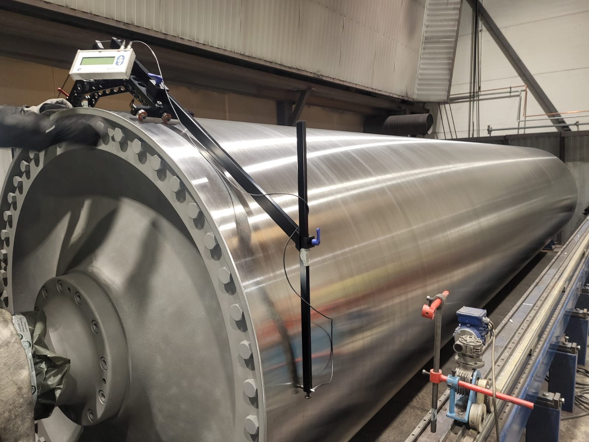
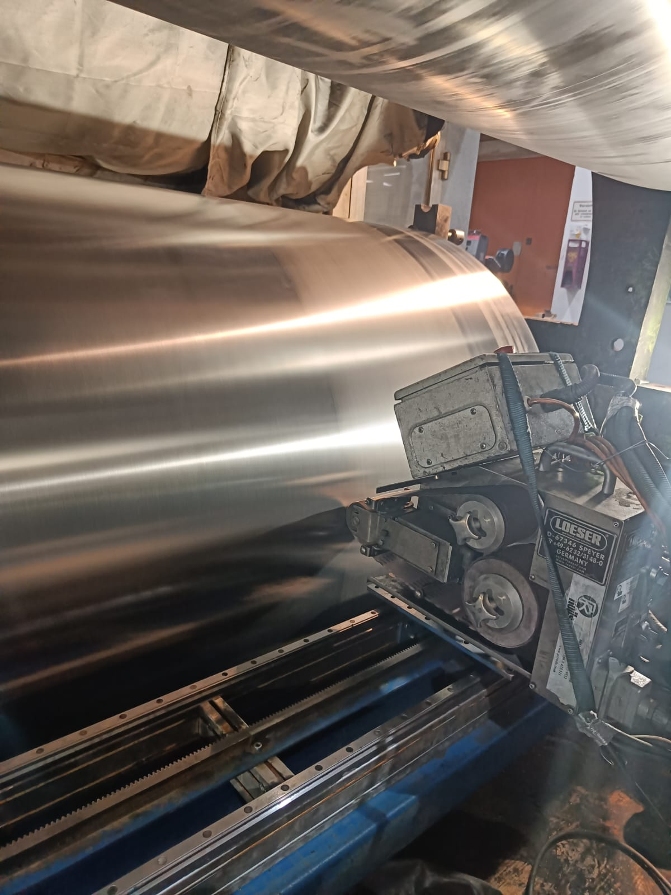

<!DOCTYPE html>
<html lang="es">
<head>
    <meta charset="UTF-8">
    <meta name="viewport" content="width=device-width, initial-scale=1.0">
    <title>PR Rolls - Peter's Paper Solutions</title>
    <link rel="preconnect" href="https://fonts.googleapis.com">
    <link rel="preconnect" href="https://fonts.gstatic.com" crossorigin>
    <link href="https://fonts.googleapis.com/css2?family=Work+Sans:ital,wght@0,100..900;1,100..900&display=swap" rel="stylesheet">
    <link rel='stylesheet' href="../styles/style.css">
    <script src="../resources/empresas.js"></script>
    <script src="../resources/menu-data.js"></script>
    <script>
    var langContent =  {
                "empresa": "PR Rolls",
                "es": `<article>
                        <h1>Equipos y Servicios de PR Rolls para la Fabricación de Papel</h1>

                        <h2>Introducción</h2>
                        <p>PR Rolls es una empresa líder en la industria de fabricación de papel, ofreciendo productos y servicios especializados que optimizan el rendimiento de las fábricas de papel. Su enfoque en soluciones eficientes y su capacidad para realizar reparaciones in situ los destacan como una opción confiable para empresas del sector.</p>

                        <h2>Descripción de la empresa</h2>
                        <p>PR Rolls se dedica a la fabricación y mantenimiento de equipos avanzados para la industria papelera. Con un equipo de expertos y tecnologías innovadoras, se han posicionado como líderes en el mercado, brindando soluciones integrales para optimizar los procesos de producción y minimizar tiempos de inactividad.</p>

                        <h2>Detalles de sus productos y servicios</h2>
                        <h3>1. Servicios in situ</h3>
                        <p>PR Rolls ofrece una amplia gama de servicios de mantenimiento y reparación in situ, lo que evita la necesidad de desmontar grandes maquinarias. Esto incluye operaciones de maquinado como molienda, perforación, ranurado y recubrimiento, permitiendo que las fábricas de papel continúen operando sin largas interrupciones.</p>

                        <details>
                            <summary>Un trabajo duro en UPM Rauma en Finlandia. Eje de la bomba Sulzer in situ</summary>
                            <iframe src="https://drive.google.com/file/d/1_G9mZKTVU1Vp1WTxp5dRp6Ggd6H6xkn0/preview" allow="autoplay"></iframe>
                        </details>
                        <details>
                            <summary>Trabajando en un cilindro Clupak y un cilindro Valmet en el taller</summary>
                            <iframe src="https://drive.google.com/file/d/1i6TjB3IievSU5UfVUgNq3e_VXjdZ4OyB/preview" allow="autoplay"></iframe>
                            <p>
                                <p>(PR-Rollers): Cilindro Valmet grande 1800 x 9000 mm</p>
                                <p>(PR-Rollers): en Mondi Steti Clupak, República Checa D1500x6800mm</p>
                            </p>
                        </details>

                        <h3>2. Recubrimientos especializados</h3>
                        <p>Entre los productos destacados se encuentran sus recubrimientos de carburo y compuestos fluoroplásticos, que mejoran la durabilidad de los rodillos y cilindros en las fábricas de papel. Los recubrimientos TecnoClean y TecnoDiamond, por ejemplo, ofrecen resistencia al desgaste y ayudan a prevenir la acumulación de suciedad, lo que extiende la vida útil del equipo y asegura una producción continua.</p>

                        <figure>
                            
                            <figcaption>Cilindros de refrigeración Leipa D1500x4000mm</figcaption>
                        </figure>
                        <figure>
                            
                            <figcaption>PR- ROLLS: Medición de la redondez del cilindro</figcaption>
                        </figure>

                        <h2>Beneficios de obtener los productos y servicios de PR Rolls</h2>
                        <p>Elegir PR Rolls trae múltiples beneficios para las fábricas de papel. Sus soluciones in situ no solo ahorran tiempo y dinero, sino que también garantizan un rendimiento óptimo al reducir significativamente los tiempos de inactividad. Además, sus recubrimientos avanzados prolongan la vida útil de los equipos, lo que se traduce en un mejor retorno de la inversión para sus clientes.</p>

                        <h3>¿Por qué elegir los servicios de PR Rolls?</h3>
                        <p>La experiencia y capacidad de PR Rolls para trabajar directamente en las instalaciones del cliente permite minimizar los costos operativos y aumentar la eficiencia de producción. Sus servicios de mantenimiento especializado aseguran que las fábricas puedan seguir funcionando sin problemas y con menores interrupciones.</p>

                        <details>
                            <summary>Un trabajo duro en UPM Rauma en Finlandia. Eje de la bomba Sulzer in situ</summary>
                            <iframe src="https://drive.google.com/file/d/1jjN2mIX6A836mK2Lr5oX1D7QOh2-F49B/preview" allow="autoplay"></iframe>
                            <p>
                                <p>Trabajos en Interpack Egipto</p>
                                <p>PR- ROLLS: Trabajo de pulper en obra</p>    
                            </p>
                        </details>

                        <h3>¿Cuáles son las ventajas de sus recubrimientos?</h3>
                        <p>Los recubrimientos aplicados por PR Rolls mejoran el rendimiento de las máquinas, aumentando su resistencia al desgaste y facilitando el mantenimiento. Esto no solo optimiza el rendimiento de las fábricas, sino que también permite una producción más limpia y eficiente.</p>

                    </article>`,
                "en": `<article>
                        <h1>PR Rolls Equipment and Services for Paper Manufacturing</h1>

                        <h2>Introduction</h2>
                        <p>PR Rolls is a leading company in the paper manufacturing industry, offering specialized products and services that optimize the performance of paper mills. Their focus on efficient solutions and their ability to perform on-site repairs make them a reliable choice for companies in the sector.</p>

                        <h2>Company Overview</h2>
                        <p>PR Rolls is dedicated to the manufacturing and maintenance of advanced equipment for the paper industry. With a team of experts and innovative technologies, they have positioned themselves as market leaders, providing comprehensive solutions to optimize production processes and minimize downtime.</p>

                        <h2>Product and Service Details</h2>
                        <h3>1. On-Site Services</h3>
                        <p>PR Rolls offers a wide range of on-site maintenance and repair services, eliminating the need to dismantle large machinery. This includes machining operations such as grinding, drilling, grooving, and coating, allowing paper mills to continue operating without long interruptions.</p>

                        <details>
                            <summary>Hard work at UPM Rauma in Finland. Sulzer pump shaft on site</summary>
                            <iframe src="https://drive.google.com/file/d/1_G9mZKTVU1Vp1WTxp5dRp6Ggd6H6xkn0/preview" allow="autoplay"></iframe>
                        </details>
                        <details>
                            <summary>Working on a Clupak cylinder and a Valmet cylinder in the workshop</summary>
                            <iframe src="https://drive.google.com/file/d/1i6TjB3IievSU5UfVUgNq3e_VXjdZ4OyB/preview" allow="autoplay"></iframe>
                            <p>
                                <p>(PR-Rollers): Large Valmet cylinder 1800 x 9000 mm</p> 
                                <p>(PR-Rollers): at Mondi Steti Clupak, Czech Republic D1500x6800mm</p>       
                            </p>
                        </details>

                        <h3>2. Specialized Coatings</h3>
                        <p>Among their standout products are their carbide and fluoroplastic composite coatings, which enhance the durability of rollers and cylinders in paper mills. TecnoClean and TecnoDiamond coatings, for example, offer wear resistance and help prevent dirt buildup, extending equipment life and ensuring continuous production.</p>

                        <figure>
                            
                            <figcaption>Leipa refrigeration cylinders D1500x4000mm</figcaption>
                        </figure>
                        <figure>
                            
                            <figcaption>PR- ROLLS: Measurement of cylinder roundness</figcaption>
                        </figure>

                        <h2>Benefits of Acquiring PR Rolls Products and Services</h2>
                        <p>Choosing PR Rolls brings multiple benefits to paper mills. Their on-site solutions not only save time and money but also ensure optimal performance by significantly reducing downtime. Additionally, their advanced coatings extend equipment life, resulting in a better return on investment for their customers.</p>

                        <h3>Why choose PR Rolls services?</h3>
                        <p>The experience and capability of PR Rolls to work directly at the customer's facility help minimize operational costs and increase production efficiency. Their specialized maintenance services ensure that mills can continue to run smoothly with fewer interruptions.</p>

                        <details>
                            <summary>Hard work at UPM Rauma in Finland. Sulzer pump shaft on site</summary>
                            <iframe src="https://drive.google.com/file/d/1jjN2mIX6A836mK2Lr5oX1D7QOh2-F49B/preview" allow="autoplay"></iframe>
                            <p>
                                <p>Jobs at Interpack Egypt</p>
                                <p>PR- ROLLS: Pulper work on site</p>    
                            </p>
                        </details>

                        <h3>What are the advantages of their coatings?</h3>
                        <p>PR Rolls' coatings improve machine performance by increasing wear resistance and facilitating maintenance. This not only optimizes mill performance but also allows for cleaner and more efficient production.</p>

                    </article>`,
                "pt": `<article>
                        <h1>Equipamentos e Serviços da PR Rolls para Fabricação de Papel</h1>

                        <h2>Introdução</h2>
                        <p>A PR Rolls é uma empresa líder na indústria de fabricação de papel, oferecendo produtos e serviços especializados que otimizam o desempenho das fábricas de papel. Seu foco em soluções eficientes e sua capacidade de realizar reparos in loco os destacam como uma escolha confiável para empresas do setor.</p>

                        <h2>Descrição da Empresa</h2>
                        <p>A PR Rolls é dedicada à fabricação e manutenção de equipamentos avançados para a indústria papeleira. Com uma equipe de especialistas e tecnologias inovadoras, eles se posicionaram como líderes de mercado, fornecendo soluções completas para otimizar processos de produção e minimizar tempos de inatividade.</p>

                        <h2>Detalhes dos Produtos e Serviços</h2>
                        <h3>1. Serviços In Loco</h3>
                        <p>A PR Rolls oferece uma ampla gama de serviços de manutenção e reparo in loco, eliminando a necessidade de desmontar grandes máquinas. Isso inclui operações de usinagem como retífica, perfuração, ranhuramento e revestimento, permitindo que as fábricas de papel continuem operando sem longas interrupções.</p>

                        <details>
                            <summary>Trabalho duro na UPM Rauma na Finlândia. Eixo da bomba Sulzer no local</summary>
                            <iframe src="https://drive.google.com/file/d/1_G9mZKTVU1Vp1WTxp5dRp6Ggd6H6xkn0/preview" allow="autoplay"></iframe>
                        </details>
                        <details>
                            <summary>Trabalhando em um cilindro Clupak e um cilindro Valmet na oficina</summary>
                            <iframe src="https://drive.google.com/file/d/1i6TjB3IievSU5UfVUgNq3e_VXjdZ4OyB/preview" allow="autoplay"></iframe>
                            <p>
                                <p>(PR-Rollers): Cilindro Valmet grande 1800 x 9000 mm</p>
                                <p>(PR-Rollers): em Mondi Steti Clupak, República Tcheca D1500x6800mm</p>  
                            </p>
                        </details>

                        <h3>2. Revestimentos Especializados</h3>
                        <p>Entre os produtos de destaque estão seus revestimentos de carboneto e compostos fluoroplásticos, que aumentam a durabilidade de rolos e cilindros nas fábricas de papel. Os revestimentos TecnoClean e TecnoDiamond, por exemplo, oferecem resistência ao desgaste e ajudam a evitar o acúmulo de sujeira, prolongando a vida útil do equipamento e garantindo uma produção contínua.</p>
                        <figure>
                            
                            <figcaption>Cilindros de refrigeração Leipa D1500x4000mm</figcaption>
                        </figure>
                        <figure>
                            
                            <figcaption>PR- ROLLS: Medição da circularidade do cilindro</figcaption>
                        </figure>
                        <h2>Benefícios de Adquirir os Produtos e Serviços da PR Rolls</h2>
                        <p>Escolher a PR Rolls traz múltiplos benefícios para as fábricas de papel. Suas soluções in loco não só economizam tempo e dinheiro, mas também garantem um desempenho ideal ao reduzir significativamente o tempo de inatividade. Além disso, seus revestimentos avançados prolongam a vida útil dos equipamentos, resultando em um melhor retorno sobre o investimento para seus clientes.</p>

                        <h3>Por que escolher os serviços da PR Rolls?</h3>
                        <p>A experiência e capacidade da PR Rolls de trabalhar diretamente nas instalações do cliente ajudam a minimizar os custos operacionais e aumentar a eficiência da produção. Seus serviços especializados de manutenção garantem que as fábricas possam continuar operando sem problemas e com menos interrupções.</p>

                        <details>
                            <summary>Trabalho duro na UPM Rauma na Finlândia. Eixo da bomba Sulzer no local</summary>
                            <iframe src="https://drive.google.com/file/d/1jjN2mIX6A836mK2Lr5oX1D7QOh2-F49B/preview" allow="autoplay"></iframe>
                            <p>
                                <p>Empregos na Interpack Egito</p>
                                <p>PR- ROLLS: Trabalho de despolpador no local</p>    
                            </p>
                        </details>

                        <h3>Quais são as vantagens de seus revestimentos?</h3>
                        <p>Os revestimentos aplicados pela PR Rolls melhoram o desempenho das máquinas, aumentando sua resistência ao desgaste e facilitando a manutenção. Isso não só otimiza o desempenho das fábricas, mas também permite uma produção mais limpa e eficiente.</p>

                    </article>`
        }
    </script>
    
</head>
<body>
    <header id="header">
        
    </header>
    <div class="container" id="container">
    </div>
<footer class="footer" id="footer"></footer>


</footer>
<script src="../scripts/script.js"></script>   
</body>
</html>
